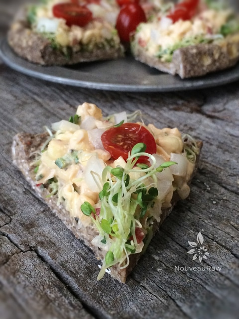

Spicy Fiesta Corn Pizza

~ raw, vegan, gluten-free ~
This isn’t your typical pizza, and it surely isn’t the what I grew up eating in the name of pizza. Remember Totino’s Pizza? Back in the day, I think we paid a whopping 50 cents for a whole pizza.
What does that tell you about the quality of ingredients used? I shudder to think about it now. But I won’t fib… I loved them. As I grew up, my taste buds became more refined.
I become a crust connoisseur which worked out perfectly in my father-daughter relationship. I would peel the topping off and put it on dad’s plate, and I’d eat the crust. Lol, He felt it was a shame to fill up on bread and I thought it was a shame to fill up on cheese and everything greasy within.
But things change, and today I like the crust, AND I like the toppings. :) Thank goodness that the ingredients I use are made of whole, organic foods. This is what I WANT to put into my body… would you look at this list of ingredients for Tontino’s Pizza?!
Ingredients:
Enriched Flour (Wheat Flour, Niacin, Ferrous Sulfate, Thiamin Mononitrate, Riboflavin, Folic Add), Water, Mozzarella Cheese Substitute (Water, Palm Oil,Rennet Casein, Soybean Oil, Potato Starch, Vital Wheat Gluten, Sodium Aluminum Phosphate, Salt, Potassium Chloride, Citric Acid, Potassium Sorbate [Preservative], Sodium Citrate, Sodium Phosphate, Titanium Dioxide [Artificial Color], Maltodextrin, Magnesium Oxide, Riboflavin, Vitamin A Palmitate, Vitamin B12), Tomato Puree (Water, Tomato Paste), Cooked Cured Pork Pizza Topping (Canadian Style Bacon Water Added [Pork Sirloin Hips Cured with Water, Sugar, Salt, Potassium Chloride, Sodium Phosphate, Natural Smoke Flavor, Sodium Erythorbate, Sodium Nitrite], Ground Pork, Water, Sodium Phosphate, Sodium Erythorbate, Sodium Nitrite), Oil Blend (Canola, Soybean and/or Partially Hydrogenated Soybean Oil), Contains Less than 2% of: Rehydrated Pasteurized Process Mozzarella Cheese (Water,Nonfat Milk, Cheese Cultures, Salt, Enzymes, Citric Acid, Vitamin A Palmitate, Vitamin B6, Sodium Aluminum Phosphate, Sodium Citrate, Sodium Phosphate),Sugar, Modified Corn Starch, Salt, Dry Yeast, Defatted Soy Flour, Dextrose, Spice, Monocalcium Phosphate, Sodium Bicarbonate, Rehydrated Enzyme ModifiedCheese (Water, Milk, Cheese Cultures, Salt, Enzymes), Beet Powder, Citric Acid, Malic Acid, Xanthan Gum, Sorbitan Monostearate, Maltodextrin, Ascorbic Acid, Natural Flavor. Contains wheat, milk and soy ingredients.
I know that many of you don’t eat these pizzas or maybe never have but just in case there is someone out there who still eats them or any other boxed pizza, I want to encourage you to think twice about what you are putting into your body. So do me a flavor (yes I meant flavor) and give this recipe a try.
Yields 5 cups batter
Pizza crust:
Toppings:
Preparation:
Pizza crust:
- In the food processor, fitted with the “S” blade, process the walnuts down to a small cornmeal size. Be careful that you don’t over-process the walnuts, as it will cause too much of the oils from the nuts to be released.
- Add the ground flax, hemp seeds, and salt. Pulse together and place in a medium-sized bowl.
- Add the almond pulp and 1/2 cup of water. Mix well with hands. If the batter feels too dry and crumbly, add a few more tablespoons until it is moist enough to stick together. I used 1 cup of water, but it depends on how much moisture is left in your almond pulp.
- To create the pizza form, create a large ball with the desired amount of dough. I used roughly 2 cups to make a mini pizza.
- Flatten the dough out on a teflex sheet or wax paper, creating a lip around the edge. Transfer to the mesh sheet that comes with the dehydrator.
- Sprinkle extra hemp seeds and coarse sea salt on top of each crust.
- Dehydrate at 115 degrees (F) for 10 – 18 hours. The length of time will depend on the machine you use and the humidity in the air. I didn’t dry mine totally dry. I wanted some moisture to remain so it would be semi-soft when I bite down on it.
Assembly:
- Create a layer of sprouts on the bottom.
- Spread the Raw Spicy Fiesta Corn Dip on top and sprinkle the diced tomato and onion on top of that.
- Eat and enjoy!

© AmieSue.com